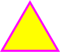
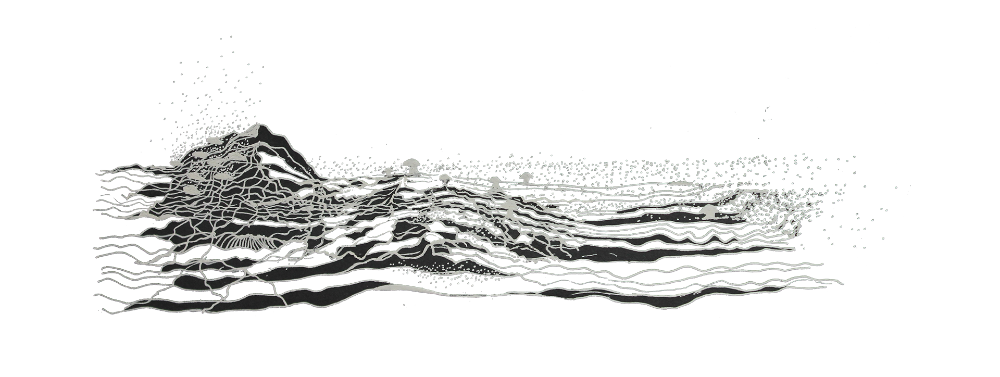

Fieldness is an experiment and research project to explore what is 'value'. At the surface, Fieldness is a decentralized application or 'dapp'. Underneath the surface, it is an archive of species that might never be seen again, an attempt to convert experiences with non-human beings into crypto-assets of inevitable and increasing rarity, a lifetime personal archive (for each user) of 'seeds' visited. It is about creating a model of 'what is valueable' from an organizing logic differnt from our current system.
Fieldness emerged out of my interest in mycelium and non human netowrks, blockchain tech and the distributed web as human network and in being a space for what lies in the , extraterrestrial, extra-real spaces. This work is primarily about the act of observation.
'I use the term to refer to the space that lies beyond the topological and conceptual limits of the node. This space is not empty but inhabited by multitudes that do not conform to the organizing logic of the network.' - Off the Network
The Fieldness dapp is a platform for exploring this extra nodal space, the space in between destinations. It can be thought of as a game on top of a crowd sourced ecological database and uses tokens as 'seeds' which are time stamped and geo stamped and hold a quantum of information.
web 3.0 and dapp landscape |
By downloading the dapp, anyone can become part of the Fieldness Network.
An 'seed' in this context is any physical space with the proliferation of non-human activity or just simply presence of a predominantly non-human being.
This means that a tree can be an incident. And one can earn money by sitting under a tree for a certain time.
Mediated through the smartphone to access virtual and physical infrastructures of the city, this project attempts to create a parallel economy that is not based on consumption but on spending time in nature and observing. In this attention economy, we can barter a quantum of attention for a value and reinvent the meaning of ‘value’ in the process.
The artistic motivation is to create a moist envoirmint for a growing, living network that is also an ecological database and a repositary for a long time to come. It is an attempt to not forget what we are losing everyday with the ongoing mass exteinction events in all of our vicinities. It is an experiment with the meaning of 'value' both in economic and philosophical space. It attempts to look at how value emerges or is enforced.
In the world as we know it right now, what is valueable is constantly shifting. The economic models of what is valueable and exchangeable are in flux. Attention and value seem to have a close relation in our mediated lives right now.
With looming climate change, the pandemic, it seems imperetive to examine what has value. And i would like to ask people to join in the experiment to create a community and network supporting knowledge systems that have vanished from our mental models and vocabulary, public discourse and education. How to take back the earth?
The Fieldness dapp* allows you to create 'seeds'.
These seeds contain in them location markers that are created by human on walks. Being a part of this network allows the users to earn cryptocurrency.
The idea is that humans all over the world, taking walks, making observations add these unique observations to an open database that is not server or service dependent and can be trusted to run forever. *(forever is as long as the ethereum blockchain runs)
You can create a new seed after you have some game-coins. You can earn game-coins by gathering them around other seeds lying around in your vicinity. These seeds are created by other users of the dapp. These fixed location markers gain or lose value with time as more or less visitors visit them. One could self sustain a seed if the creator visits it. As you understand the dapp's meanign and function, you qualify to make your own seeds.
Its about taking a walk in the wilderness. Its about shifting your attention away.
Fieldness started as the incident network project.
The scope of the project to explore ways of seeing the planet- the popular mental models of what is 'valueable' on the planet and in our lives.
It challenges the notions of ownership - the ownersip of stocks, original artowrk, stake in a complany, stake in the health of a network etc. what does it mean to share? what does it mean to own?
Right now seems to be an appropriate time for this as we are going through a large shift in what in what we imagine as currency, what is valueable in the neolibral framework, and what value is reflected (or not reflected) in our lived reality.
Decentralized systems seem to be addressing some of the data exptractivist practices of centralized platforms like amazon, facebook etc. The financial model of web2.0 is attention extraction model.

Anything that is growing with no human aid. Wilderness. Its everywhere.
monoculture has killed the vibe.
*these surreal memes are not my creation everythign else is not

//How to grow an idea //
this project can be imagined by employing the metaphor of a growing mushroom network.
//spore001//
The idea spawns from a mind drawing from various sources. Once an idea is formed - imagine it as a ball - this ball is a spore. It is no more rhizomatic. It was formed from a rhizomatic structure and carries within it the possibility of becoming rhizome again. This is the beginning. The idea is formed and is carried inside the landscape of a mind. It comes out here as a proposal. All information translated into text and image uploaded onto virtual winds.
//landing of the spore//
Enviormental factors are defining to life or death of an organism. To its good luck, the spore landed on moist minds. It took root. This was a small step for the spore with possibility of profound transformation.
//growing underground//
Moist minds opened a source for the spore to drink from. It starts to prepare. It settles into the moist surface and is becoming rhizome again, hidden away. It must find nutrition and love and grow its mycelial roots far and wide. And prepare to fruit. It has to study the landscape and the nature of virtual winds. Test the waters. This is its only chance to life, only chance to survive extinction.
The source is limited and so is time. There will be a short youth - the celebration of life - becoming itself - becomgin mushroom - just after which - there will be decay. The spore would have lived its life. It is ready to go into full bloom now.
//becoming mushroom//
The spore has transformed into a mushroom. This webpage and the Fieldness app IS the mushroom. It contains within it the code to tranform any smartphone device into a portal, and any mind into a moist mind, creating a human social network. The time is ripe. The mushroom is ripe.
// explode//
Once all the code is written and tested, films rendered, texts edited, webpages created and hosted, forest walks curated, cryptocurrency wallets checked- the preperation is complete. The mushroom explodes. slowly.
An infinite number of spores spread. Travel with virtual winds into instagram feeds and twitter timelines. Hoping to take root in moist minds and cover the city of Delhi.
The first step is for a human to see Fieldness and not know what it is. The next step is to allow the spore to rest in their phone and their mind. The third step is to join the network and go on walks into forests. where is all this leading up to? What really is the intention of spore001? All of this work, the entire life of spore001 lead to this point. Humans walking inside a forest. what is the meaning of all this?
The initial spore001 sees its flourshing progeny and human faces staring into the above question and smiles. It has come a long way. The residues and impressions will be found in physical enviorments and movements of people long after its gone, it hopes. The answer to the above questions is also hidden somewhere in this page.
COVID-19 thought for the day:
How many water droplets away is the entire networked world ?


 TIEM
TIEM